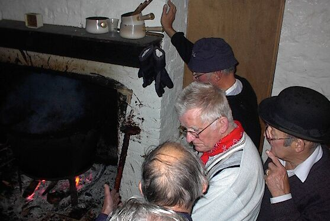
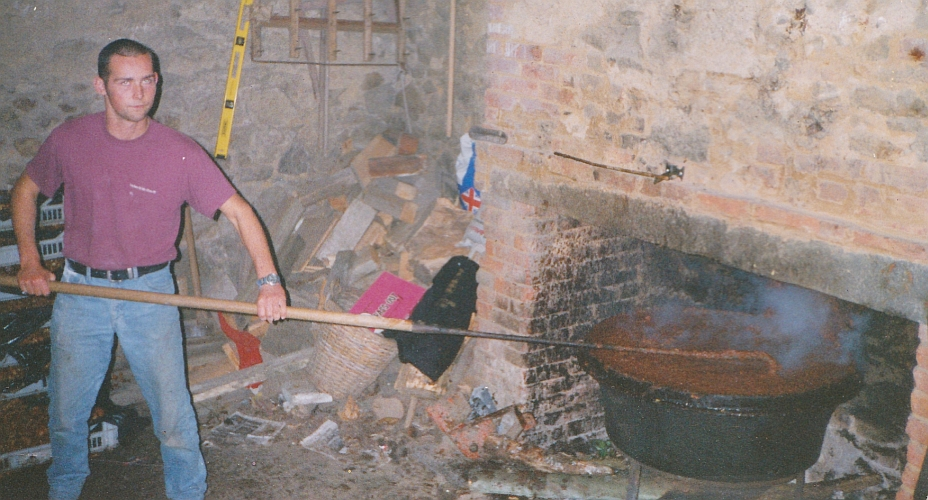

Moussieu l'Editeu,
Moussieu l'Editeu,
Mardi matin la Merrienne dêhallit après dêjeuné, pour netti san poulaillyi, une djabbe qu'ou fait toutes les s'maines mais au but d'chinq minutes ou rentrit, de bein mauvaise humeur.
“N'y'a pas moyen d'faithe autchune chose de chu temps-là,” ou s'fit. “Mé v'la trempée, et j'ai à peine qu'menchi. Et, chen qu'y'a d'piéthe je crai qu'j'en avons pour une journée. Comment s'attendre que les poules pondront quand y sont mouoiliies jusque's os et l'temps si fraid? J'voudrais bein deux-trais oeufs, pourtant.”
“Par chen qu'j'en ai veu,” j'l'y dit, “l'temps n'fait autchune difféthence à tes poues. Je n'sais pas s'ils ont tchique maladie, mais quand y fait caud n'y'a pas d'eufs, et quand y fait fraid ch'est la même boutique. J'ai dans l'idée, Merrienne, que tu lûs donne trop d'nouorrituthe. Vingt fais par jour y faut lûs donné une poignie d'grain, et des bolles et miettes de pain. Pas êtonnant tchi n'font pas lûs d'vé.”
“Ch'est du gniolin,” ou dit. “J'admets que ne v'la tchique temps tchi sont en strike, mais yun d'chais jours y s'y r'mettront, et tu n'éthas pas à t'pliaindre. Allons, as-tu idée d'resté dans la tchuîsine tout l'jour? Estche-que n'y'a rain à faithe dehors?”
“Tchèsque tu veur que j'faiche, ma pouôre fille?” j'l'y d'mandit. “Du temps tchi fait les bêtes sont mûs dans l'êtablye, et je n'm'en vais pas patachi dans les clios pour vais si la serclye pousse et si les mérgots sont en flieur. Ch'est un jour pour se r'pôsé, épis d'main, pourvu tchi faiche bé, nous étha pûs d'couathage à travaillyi.”
La Merrienne replitchi qu'j'éthais deu être un Espagno. “J'ai ouï dithe,” ou s'fit “qu'chais gens-là n'font jamais agniet chen tch'y peuvent laissi à d'main. Mais, sérieusement, Ph'lip, sais-tu bein qu'ne v'là l'hivé qu'arrive? Hélas que l'êté pâsse vite!”
“Vèthe, san doute,” j'l'y dit, “mais y n'faut pas oublié que quand veint l'hivé, le r'nouvé n'est pas lien. Et, après tout. l'hivé n'est pas une si mauvaise saison. Il est vrai qu'la niét veint vite, et j'nou brûle hardi d'chérbon, mais les longues séthées peuvent être pliaîsantes, épis y'a tréjous tchiquechose tchi s'pâsse pour vos intérêssi et vos amûsé. Par exempl'ye, nos Etats, ach'teu tch'ils ont yeu une longue vacance, lûs réunithont bétôt, et nou vêrra bein vite que y'a ocquo du fun en Jêrri. J'avons tchiques membres dans la Chambre ach'teu tch'y sont dêtérminés d'méttre une fin à tout chu gaspillage que nous à veu chais drain.”
“Ch'là s'peut,” ou dit, “mais ès-tu bein seux que quand l'moment veindra lûs couothage ne dispathaitra pas comme la fumée dans la ch'min'née? Nous a veu chonna d'vant. er'garde, par éxemplye, chutte fichue louai d'l'Asseûthance Sociale, tchi n'pouvait pas pâssé. Oulle est là quand-même. Nânin, man Ph'lip, j'n'ai pas hardi d'confiance que nou vêrra grand changement dans l's'Etats. Y'a bein trop d'nos membres d'Campagne tch'y n'ont pas l'couthage de lûs opinion, quand y s'trouvent parmi chutte d'gaingue-là. Mais, y'a une chose, Ph'lip. Mé et une doûzaine que j'connais, j'allons bétôt nos mettre à faithe du nier-beurre, et j'éthons tchiques bouonnes séthées, comme aut'fais. Y'a tout-plien d'Rom'thi dans l'gardin à pommiers, et du France, et j'comprends qu'y'étha moyen d'se protchuthé du chucre et un mio d'liquorice. Le cidre, sans doute, ne manqu'tha pas.”
“Chonna est tout bein bon,” j'l'y dit, “mais l'année pâssée j'fut sûs l'maufait rabot si longtemps qu'pour pûs d'tchinze jours ch'tait avec bein d'la peine que j'pouvais m'faithe sérvi d'mes bras. Chutte fais j'aid'dai à p'lé les pommes, épis après j'pouôrrai dêshallé ma clérinette et faithe un mio d'mûsique. Mais n'oublie pas Merrienne, tchi faudra des rafraichissements. N'y'a jamais yeu d'bouon nier-beurre fait sûs du tais et d'la limonade, et quand veint sûs la fin, y faut tchiquefais s'mettre deux sûs l'rabot, car ch'est du fort travas.”
“Ne t'gène pas,” ou dit, “ch'n'est pas d'agniet qu'j'ai fait du nier-beurre, et j'sais bein comment m'y prendre.”
Ph'lip
13/9/1952
 |
 |
 |
 |
 |
 |
Viyiz étout:
{kind=link}
{kind=link}